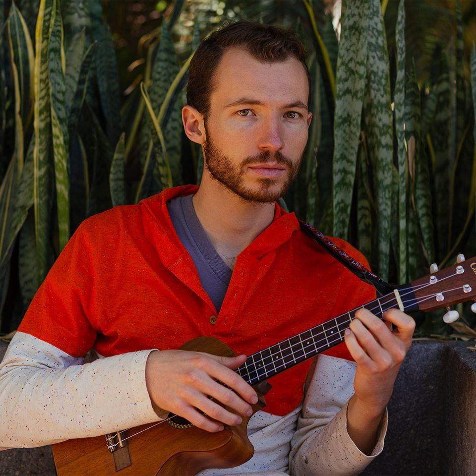

Bienvenido a mi web oficial
Te cuento un poco sobre mi
Soy Jósean Log, terrícola enamorado de la vida. Crecí en Cholula, un pintoresco pueblo mexicano donde una gran pirámide de 2,500 años domina el paisaje a la sombra del volcán Popocatépetl. La música es mi idioma, mi forma de vivir. Desde que tengo memoria, es a través de ella como mejor he conseguido entenderme en un mundo lleno de misterios fascinantes. Soy asustadizo y precavido, y suelo complicarme la existencia con dilemas que terminan obligándome a fluir y a reinventarme continuamente.